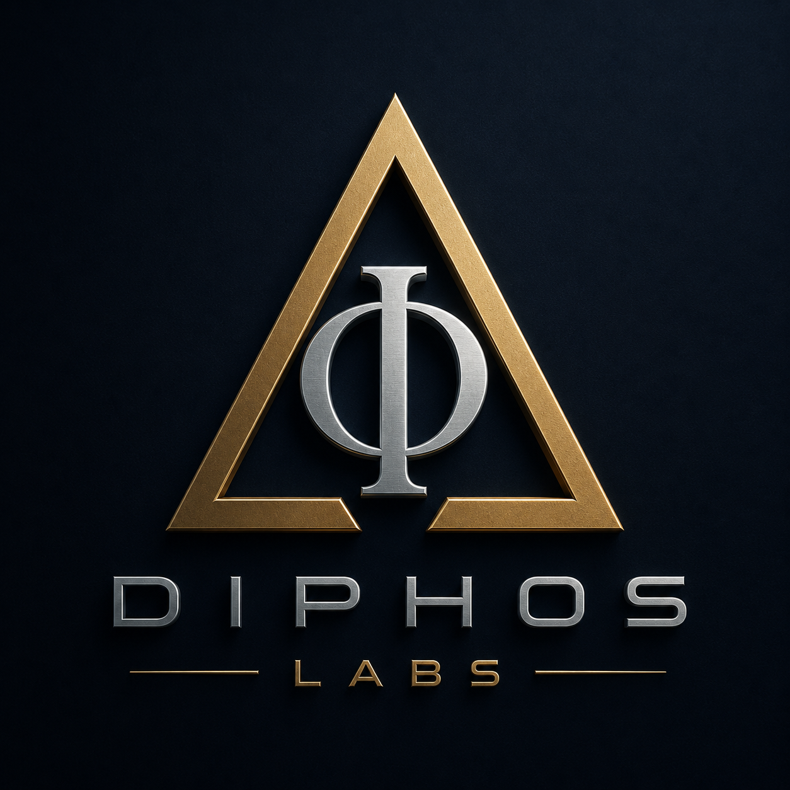

Diphos was inspired by the names of two brothers, Dimitrios and Philippos.
The name also echoes the Greek word phos — light.
It reflects our belief that technology should illuminate rather than obscure, bringing clarity, insight and thoughtful innovation to complex problems.
Delta represents change, transformation and progress.
In mathematics, science and engineering, Δ signifies movement from one state to another — the essence of innovation.
Phi represents harmony, proportion and beauty.
It is the symbol of the Golden Ratio (1.618), one of nature's most elegant patterns.
Together they represent the balance between transformation and harmony.
That balance sits at the heart of everything we build at Diphos Labs.